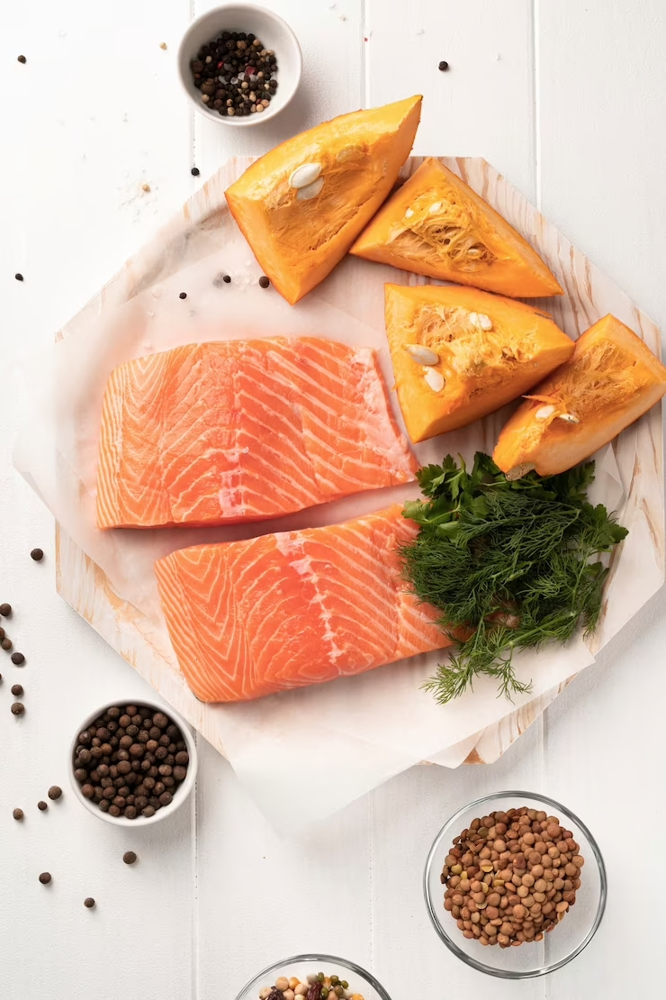

Древнерусская кухня – это совокупность кулинарных традиций, которые сложились в России с древнейших времен до XVII века. Она берет свое начало в кочевой жизни и развивалась в условиях дикой природы, длительных зим и скромности продуктов. Именно поэтому древнерусская кухня характеризуется простотой и натуральностью блюд.
Основными продуктами питания в древней Руси были рыба, мясо, яйца, овощи, ягоды и грибы. Важным элементом были мед и пиво. Блюда готовили на открытом огне, на мангалах и в печах. Одним из самых известных блюд древнерусской кухни является борщ – суп из свеклы, капусты, мяса и картофеля, которому учились готовить даже в боярских домах.
К древнерусской кухне также относится и постная кухня (древнерусская кухня включает в себя и значительный христианский период)
Православие оказало значительное влияние на русскую кухню - в ней огромное количество постных блюд. В году насчитывалось до 200 постных дней. Поэтому множество блюд русской кухни - грибные, рыбные. Также в огромных количествах употреблялись различные травы. Крапива, лебеда, сныть были огородными растениями и широко применялись в древнерусской кухне. Также использовались разнообразные растительные (постные) масла - льняное, конопляное, маковое, ореховое, маковое и прованское (оливковое).
Рыба, икра в различных видах также является важным элементом русской кухни с давних времен
Готовилось и мясо, хотя и намного меньше. Говядина была дорогостоящим продуктом. В Древней Руси, с обилием лесом, мясные породы просто не могли выращиваться в больших количествах. Мясо дичи, птицы обжаривались на огне или на угольях. Также готовились блюда на вертеле (похожие на современный шашлык), и назывались верчёнными.Однако такие блюда требовали большого количества дров и внимания, поэтому были в основном на столе богатых и знатных людей
С течением времени древнерусская кухня изменялась и приспосабливалась к новым условиям жизни. Однако многие блюда до сих пор готовятся в России и за ее пределами, и не утеряли своей популярности. Например, окрошка. Её рецепты на квасе известны с древнерусской кухни до наших дней, хотя состав значительно изменился.
Важной частью древнерусской кухни были также сладости. Медовый пряник, известный как «перепеченка», был популярным десертом. Кроме того, любимыми были различные фруктовые и ягодные компоты, морсы и кисели.
Несмотря на то, что древнерусская кухня постепенно уступила место новым кулинарным традициям, она до сих пор остается частью национальной культуры России. И многие люди с удовольствием попробуют настоящий борщ или солянку, чтобы окунуться в атмосферу старой Руси.